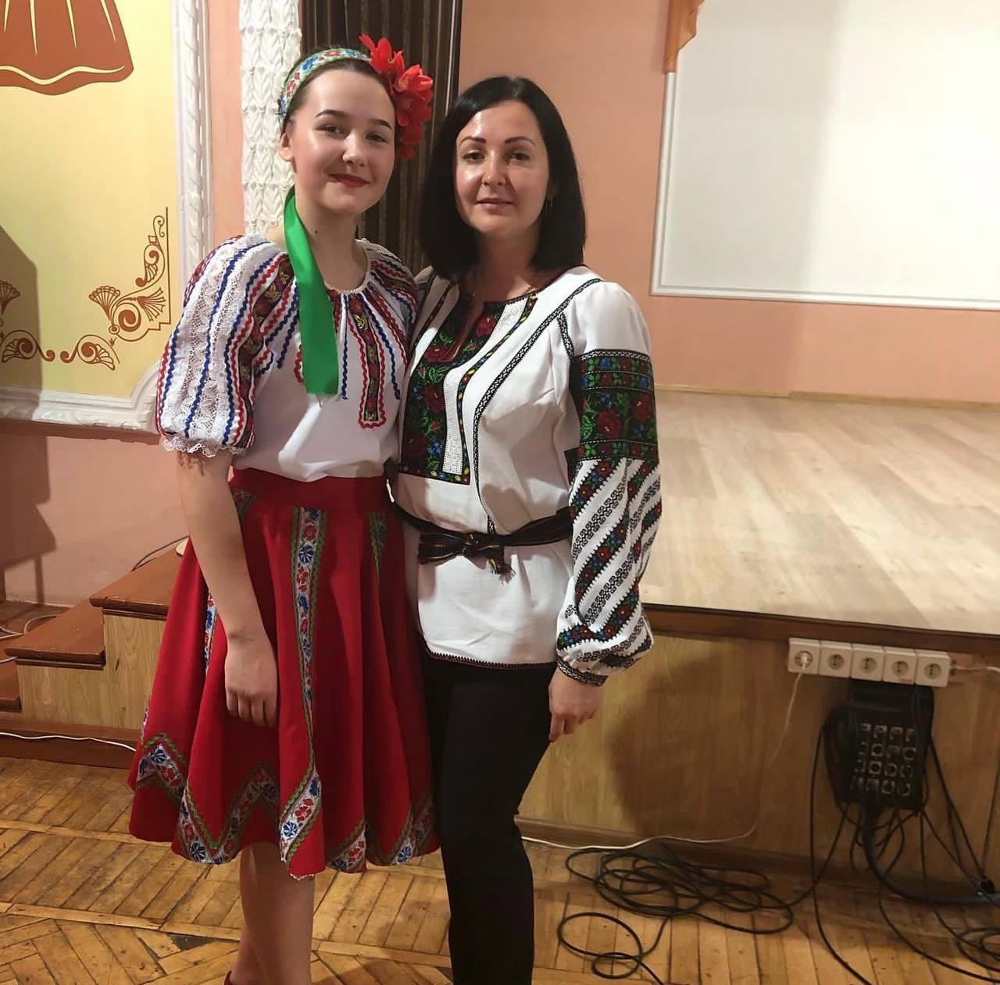

У ранньому дитинстві мене мама віддала на танці, вже який рік я не покидаю це заняття. Тому, що я дуже любила танцювати, і це хобі у мене на першому місці. Це стало великою частиною мого життя, без танців я не буду відчувати себе повноцінно, і не зможу жити дихаючи в повну силу. Починала я з народних танців, потім пішла на сучасні, так само на бальні, я перепробувала багато видів танцю, але зараз життя стало більш сучасним і відкрилися багато іншиє видів танців, навіть є деякі дивні як на мене. Зупинилася я на даний момент на хіп-хоп. Це енергійний танець, вимагає імпульсивних рухів тілом, що у мене добре виходить. Ще з дитинства я люблю виступати на великих сценах. Це неймовірний стан, коли ти виступаєш і десятки людей спостерігають за тобою та надихаються.
